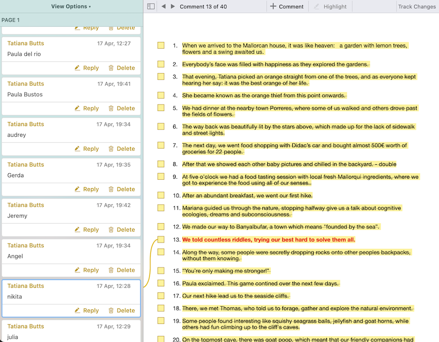
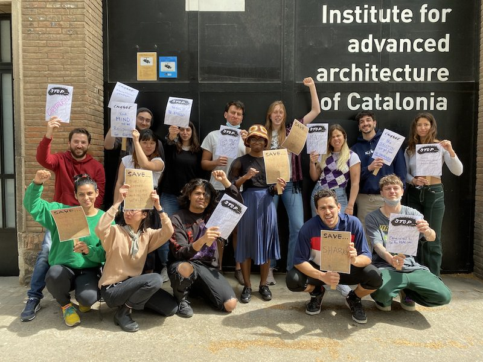
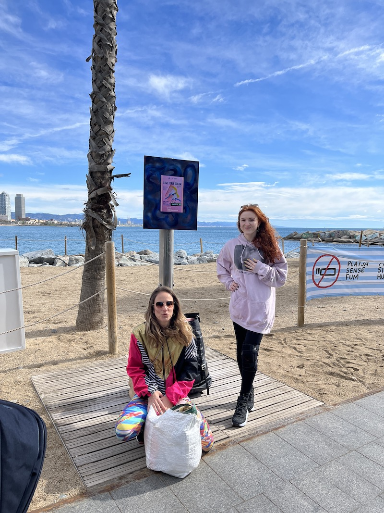
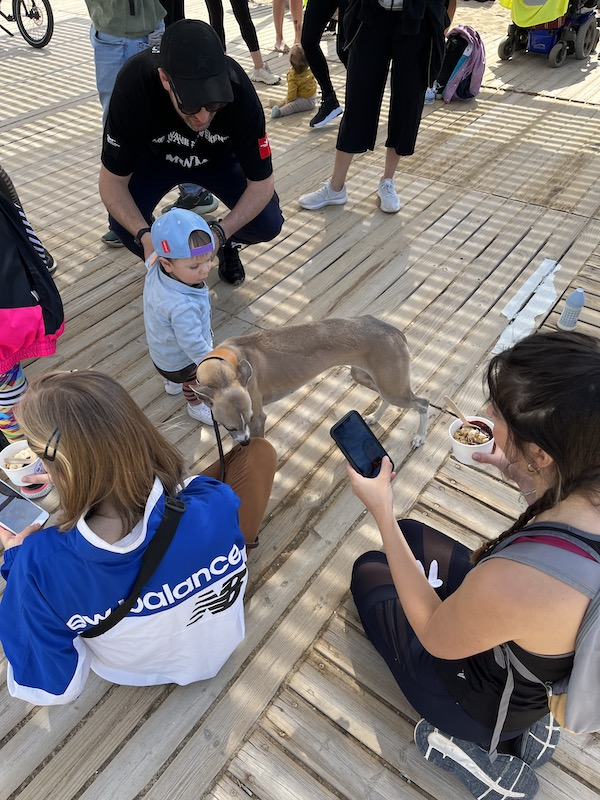
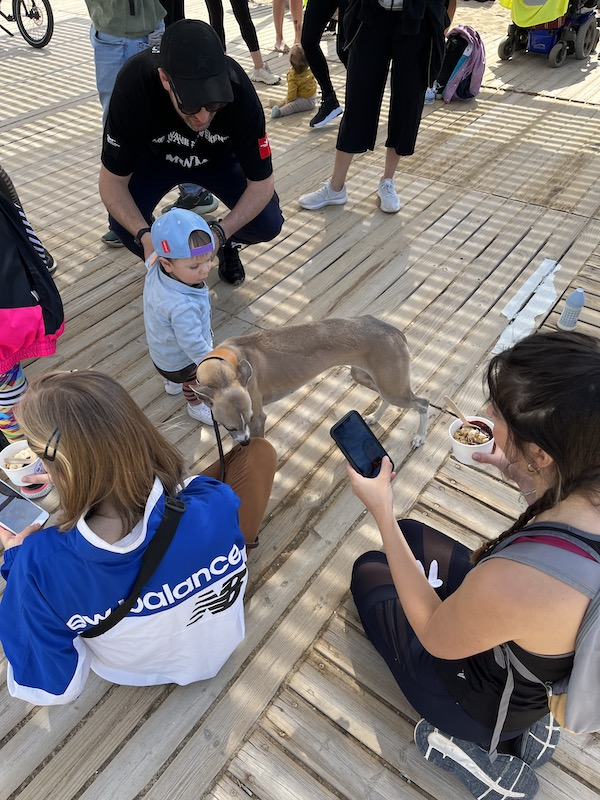
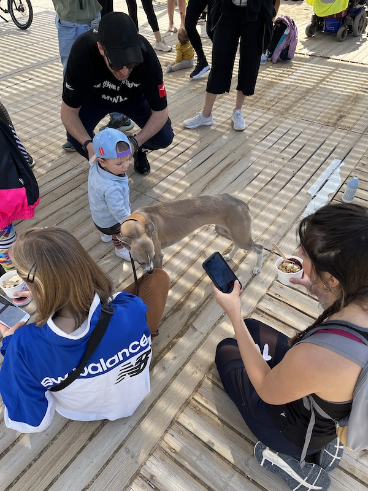

The week day of the third term. San Jordi, a Catalan festivity, fills the streets with roses.
This week I focused on finishing the video editing for the Mallorca trip video. I wanted to make something special that could tell the story of our experience there rather than just having a series of clips with background music. So, I wrote a text that narrated the video, then assigned a line to each classmate and asked them to send me a voice recording of them reading the lines. I tried to distribute the lines and voice well, to tell the story in the most engaging way.

On Thursday, we had our first maskless class in Elisava, where we discussed Design Ethics. The class was very interesting, and I am curious as to how it will evolve.

The next day, we had Curating Normals in IAAC, where the professor was online while we were in person. We started out with an activism exercise, where we had to write down some fights and then take a photo. The activity felt very performative and used excess material for such little time, and it didn't really seem to be necessary for the rest of the class. The whole lesson did not feel very engaging, possibly because we were in person and the prof was online. I hope that it will improve next week.


On the weekend, I had my first reverse design intervention: a Beach Cleanup. Originally scheduled for Saturday morning, it got postponed to Sunday due to the bad weather. I went there with Paula, and we were super happy to have met so many interesting people: an American Marine Biologist living in Barcelona, a Slovak painter and the organisers and founders of the brand who created the event. There were people of all ages helping to clean up the beach.
The creative agency who organised everything, Love Your Mother, seemed like my dream company. They exclusively do branding and marketing strategies for sustainable and ethical start ups, events and brands. I was very impressed by the drive and moral code they followed, and I told them about the Masters' program too, which piqued their interest as well. I may have formed an interesting contact.
Since I had never heard of any sustainable branding agencies, I decided to do some more research about the ones in Barcelona. Here is a list of them:
Ironically, I did a website carbon test on some of the websites, and it seemed like many of them had not considered the carbon emissions of their website, the main point of contact between their target audience. This felt very hypocritical for an agency whose focus is sustainability and Zero carbon emissions.
 
